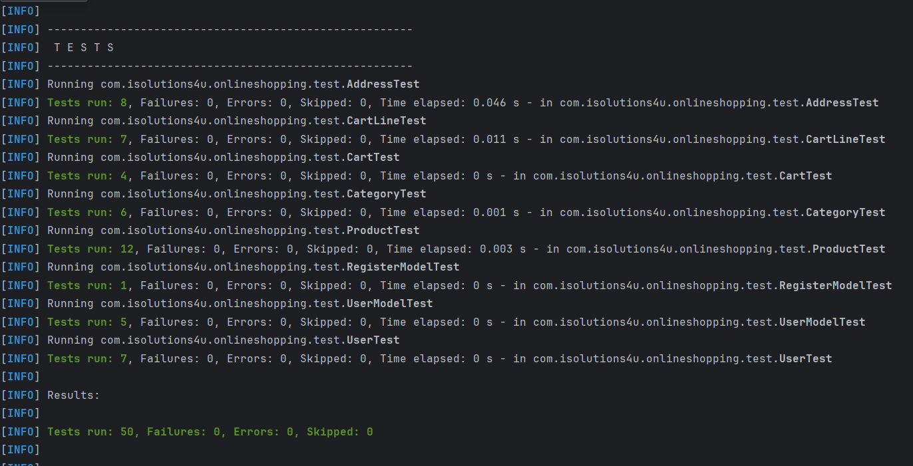
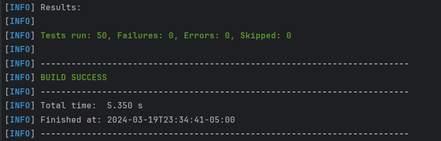
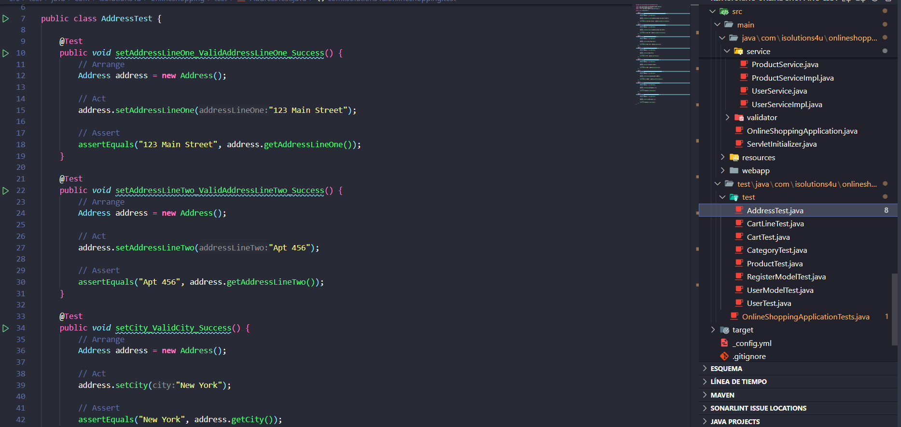

Abordando Deuda Técnica: Pruebas Unitarias

Se han introducido pruebas unitarias para mejorar la calidad y estabilidad del código. Este proyecto inicialmente tenía solo una prueba documentada, pero ahora cuenta con un conjunto completo de pruebas unitarias para diferentes aspectos del sistema.
Tema Abordado
Estas pruebas unitarias verifican la funcionalidad de las clases del paquete com.isolutions4u.onlineshopping.model, que son críticas para el funcionamiento del sistema de compras en línea.
Pruebas Propuestas
El conjunto de pruebas incluye las siguientes categorías:
- AddressTest: Verifica la configuración y obtención de diferentes atributos de direcciones, como la línea de dirección, ciudad, país, etc.
- CartLineTest: Pruebas para la configuración y obtención de atributos de líneas de carrito, como el ID, el total y la cantidad de productos.
- CartTest: Examina la funcionalidad del carrito de compras, como el ID del carrito, el gran total y el número de líneas de carrito.
- CategoryTest: Pruebas para verificar atributos como ID de categoría, nombre y descripción.
- ProductTest: Pruebas relacionadas con productos, incluyendo la configuración de atributos como ID del producto, nombre y descripción.
- RegisterModelTest: Verifica la configuración de la dirección de facturación asociada a un modelo de registro de usuario.
- UserModelTest: Examina la configuración y obtención de atributos como el ID de usuario, el nombre completo, el correo electrónico y el rol.
- UserTest: Se centra en la configuración y obtención de atributos relacionados con usuarios, como el primer nombre, apellido y correo electrónico.
Ejecución de las Pruebas
Para ejecutar las pruebas unitarias, utiliza el siguiente comando en el directorio del proyecto:
mvn test
Deberías obtener un resultado similar a este:
 En total, se realizaron 50 pruebas unitarias.
Conclusión
Con el nuevo conjunto de pruebas unitarias, se cubre una amplia gama de funcionalidades en el sistema de compras en línea. Esto ayuda a mejorar la confiabilidad y estabilidad del código, garantizando una mejor experiencia para los usuarios finales. El uso regular de pruebas unitarias en el proceso de integración continua contribuirá a un sistema más sólido y libre de errores.